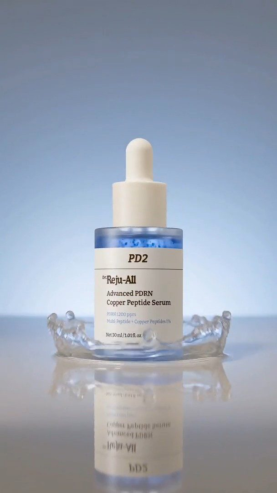
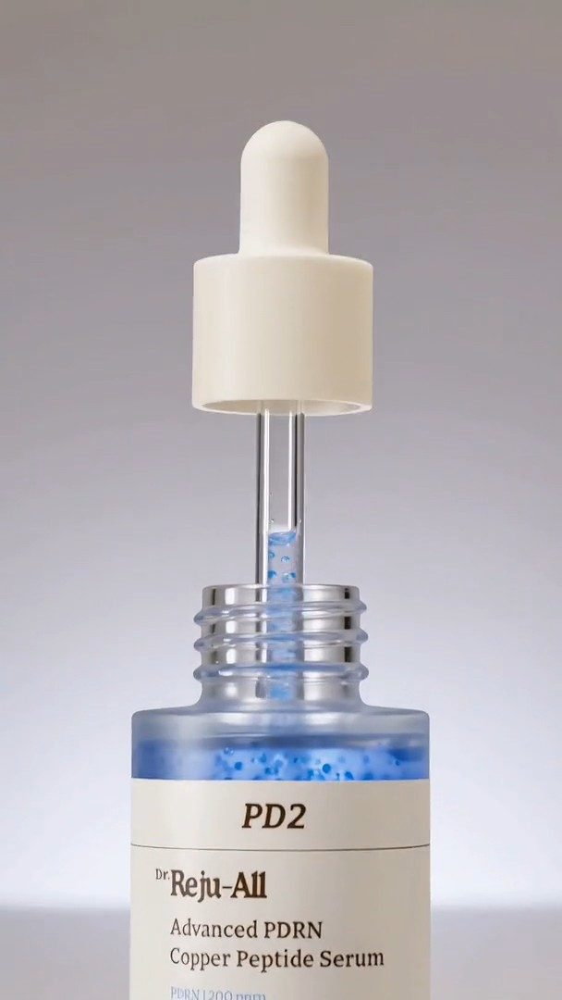
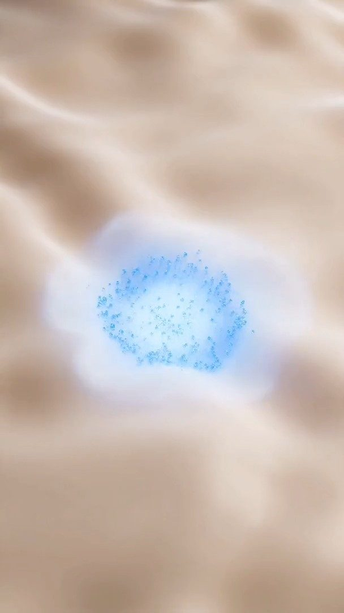
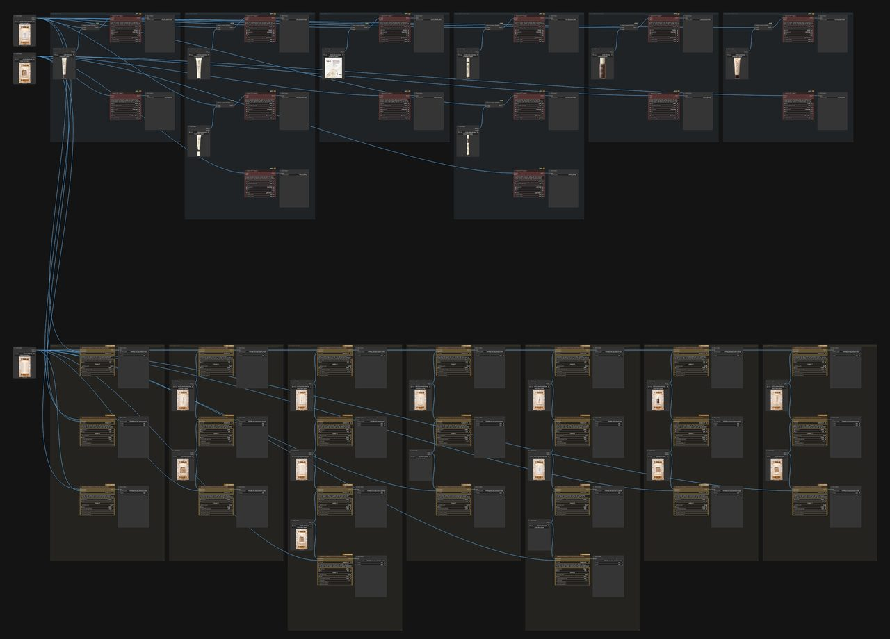
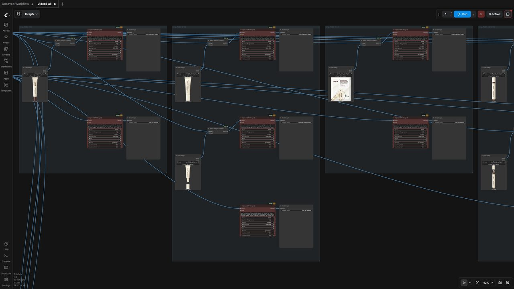

3D 제품 영상 · 9:16 세로 · 2026
닥터리쥬올
닥터리쥬올 제품 광고 영상 외주



한 파일에 담은 워크플로우 — 노드 107개
제품 일곱 개의 키프레임 이미지와 영상 구간을 ComfyUI 워크플로우 하나에 담았습니다. 위 줄 이미지 그룹 여섯은 장면 그림에 제품 사진을 묶어 GPT Image로 키프레임 14장을 만들고, 아래 줄 영상 그룹 일곱은 그 키프레임을 시작·끝 프레임으로 Seedance 영상 구간 23개를 뽑습니다.
이미지 그룹과 영상 그룹은 선으로 바로 잇지 않고, 컷·장면 단위로 정한 파일 이름(예: cut2_03_product_board)으로 저장하고 불러와 이었습니다. 비용이 드는 노드는 꺼 둔 채로 저장하고, 돌릴 그룹만 켜서 실행합니다.

